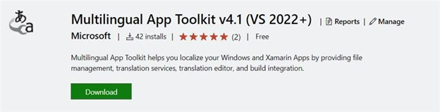
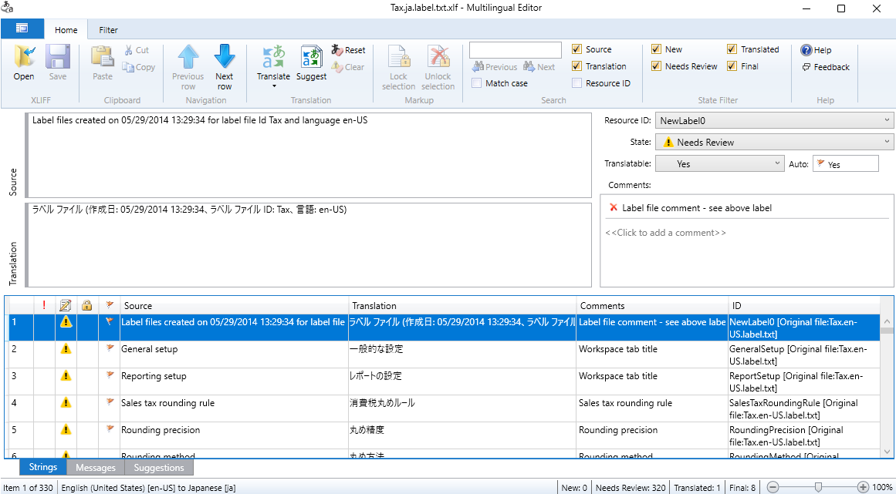

Announcements
Learn about important Multilingual App Toolkit (MAT) news and updates here.
Multilingual App Toolkit support ends on October 15, 2025
We are announcing the deprecation of the Multilingual App Toolkit. This toolkit will reach end-of-support on October 15, 2025, and will no longer be updated after this date.
If you are an existing user of the Multilingual App Toolkit, you can continue to use it without any loss of functionality after this date. However, no further updates are planned, and new installations will not be possible after October 15, 2025.
As this toolkit uses the industry standard XLIFF format, consider using a similar Computer-Aided Translation (CAT) tool that supports this format.
For more information, contact your Microsoft representative or send an email to dtssup@microsoft.com.
Multilingual App Toolkit 4.1
The Multilingual App Toolkit 4.1 update released.
MAT 4.1 audience
This extension is provided free to any Visual Studio developers interested in localizing their supported project types (such as UWP, WPF, VSIX, .NET for iOS/Mac/Android, and others).
What's new in MAT 4.1
- Visual Studio 2022 support.
MAT 4.1 Features
- IDE and build integration: End-to-end resource file localization. Translated resources are synchronized during builds.
- Machine Translation: Use Microsoft Translator and Language portal for translation.
- Import/Export: Recycle existing translations by importing .xlf files, or export machine translations for human review.
For more details, see Use the Multilingual App Toolkit.
Download MAT 4.1
Download the Multilingual App Toolkit 4.1 (VS 2022+) from the Visual Studio Marketplace.

Multilingual App Toolkit 4.1 Editor
Multilingual App Toolkit 4.1 Editor updates released.
MAT 4.1 Editor audience
The Multilingual App Toolkit Editor is a dedicated localization editor for human translators that, through its support for XLIFF, is not limited to any product or business category.
Although this editor is a part of the Multilingual App Toolkit and can be incorporated into workflows using the MAT Visual Studio extension, the use of Visual Studio is not a requirement. For example, this editor can be leveraged by Microsoft Dynamics 365 Translation Service (DTS) users to revise the output of machine translations produced by DTS.
What's new in the MAT 4.1 Editor
- Allow installation without Visual Studio as a pre-requisite.
- Allow users to configure MS Translator provider from the UI.
- Re-enable Language Portal as a translation provider.
- Redesign of telemetry collection to satisfy current compliance requirements.
For more details, see Multilingual App Toolkit Editor.
Download MAT 4.1 Editor
See Multilingual App Toolkit 4.1 Editor for language downloads.

See also
See the (Multilingual-App-Toolkit) GitHub repo for a variety of samples and to provide feedback, ask questions, and report issues or bugs.